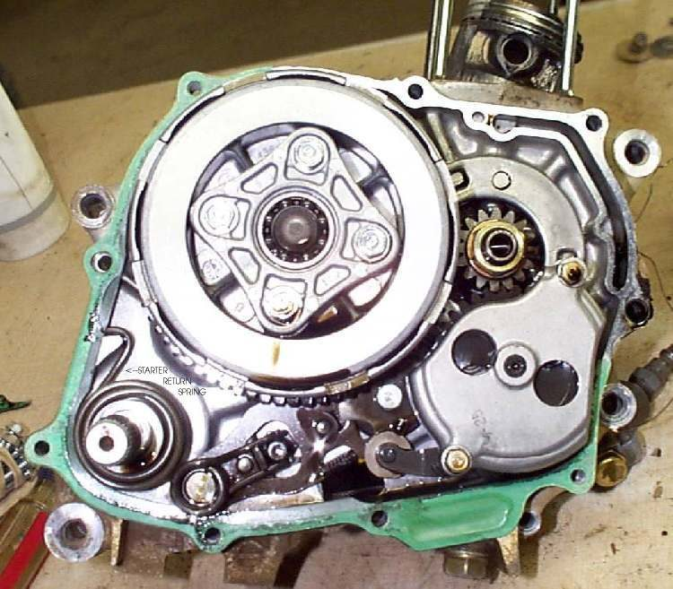
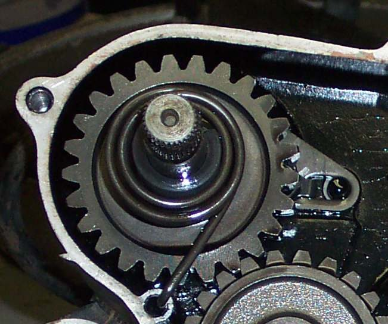
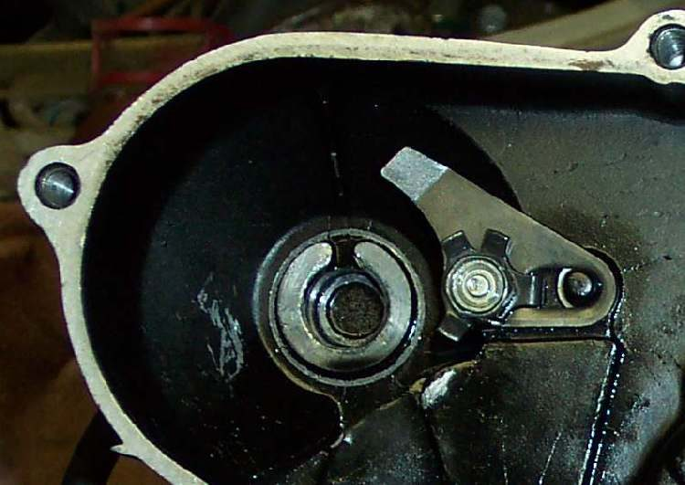
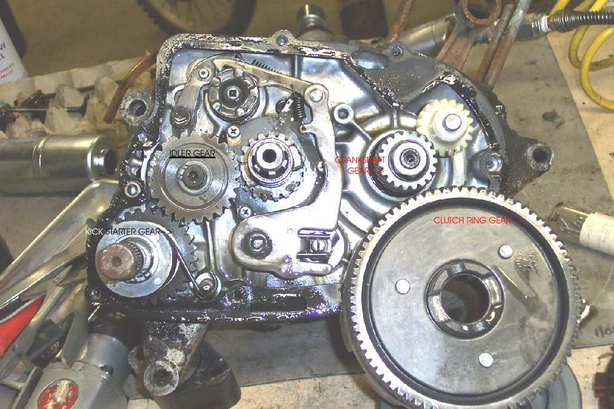
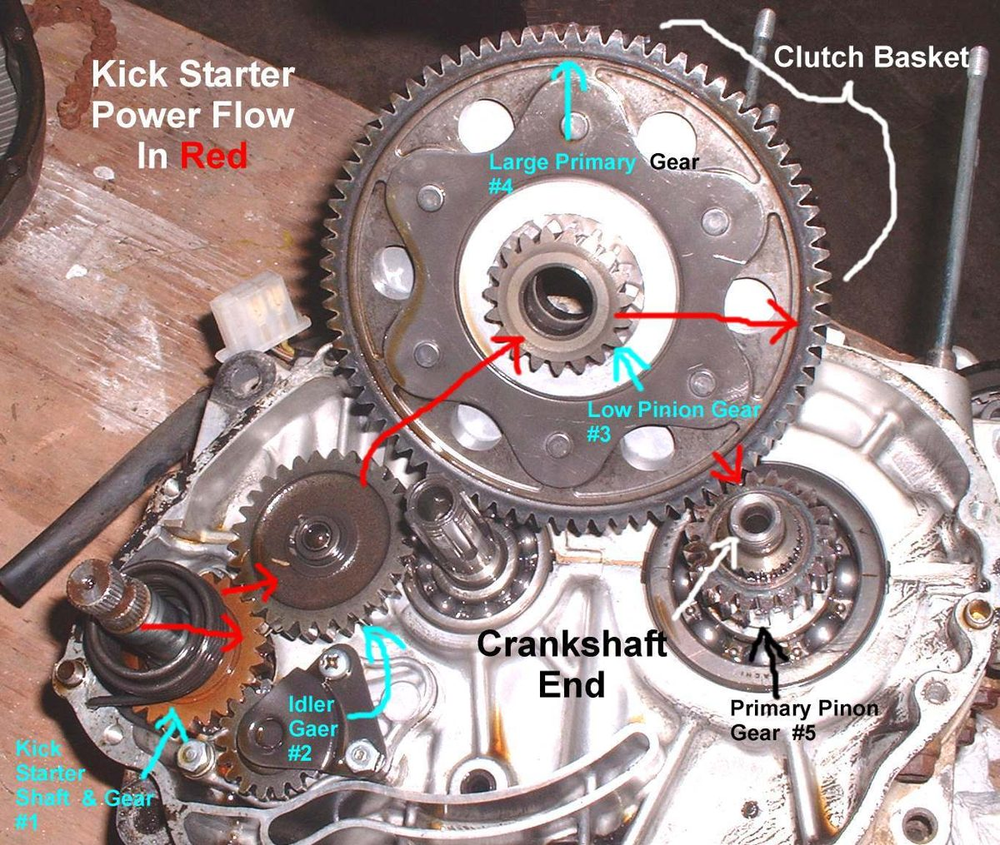
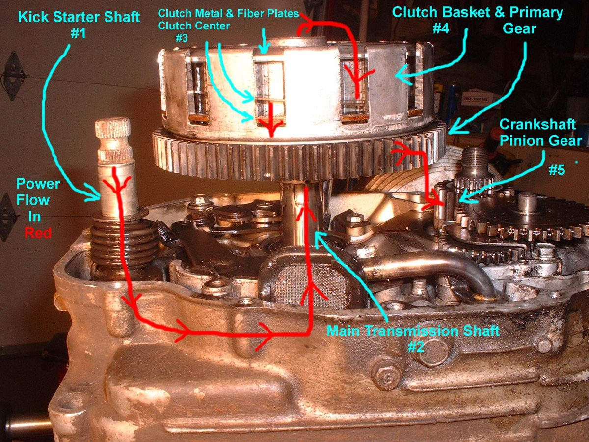
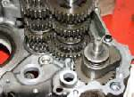
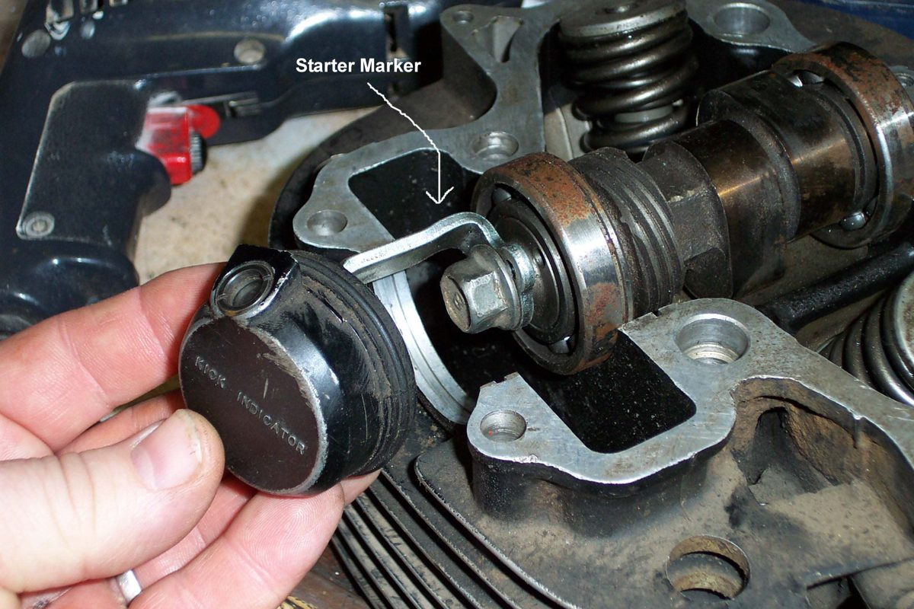

The kickstarter has a pedal on a splined shaft, a ratchet that grips a gear only on the down stroke, and a return spring that brings the pedal back up. On many commuter bikes it turns the engine through the gearbox and clutch, so the bike must be in neutral and the clutch must grip. This page covers what you can check outside the engine, and what a workshop will do inside it.
Safety
- Kick with the ball of your foot and keep your ankle in line with the pedal. A kickback can injure your ankle or knee. See Kickstarter kicks back against my foot.
- Bike on the centre stand or held upright by a helper.
- Let the engine cool before working near the exhaust.
Outside checks (rider or home)
- Pedal fixing. Check the pinch bolt is tight and the pedal does not move on its shaft. Rounded splines on the pedal or shaft make the pedal slip. Replace the worn part; do not just overtighten the bolt.
- Pedal folding arm. Check the folding joint and its detent spring. A bent pedal can hit the footpeg or exhaust and stop short.
- Neutral. On most bikes with a kickstarter that drives through the gearbox, the bike must be in neutral. Some bikes can be kicked in gear with the clutch pulled (a "primary" kickstart). Check your manual.
- Clutch. If the pedal moves but the engine turns weakly or not at all, the clutch may be slipping. Check lever free play first: Adjust clutch lever free play.
- Oil. Check the oil level: Check the engine oil level. Very low oil can mean the engine is tight or damaged.
- Engine turns? With the plug out (cap fitted to a spark tester or earthed plug), the engine should turn smoothly. A locked engine is not a kickstart fault: Engine has seized or locked up.
- Starting technique. A big single can kick back or not turn through if the starting drill is wrong. Find top dead centre with the compression release or the kickstart indicator window if the engine has one: Kick start a big single, or push start a bike with no kickstart.
- Which kind of kickstart drive? In gear, pull the clutch lever in and push the pedal down gently by hand. If the engine turns, it is a primary kickstart: it drives the crankshaft through the clutch outer and can be used in gear with the clutch pulled in. If nothing turns, the kick drives through the gearbox shafts: it only works in neutral or with the clutch let out. Knowing this saves looking for a fault that is not there.
Inside the engine (workshop)
The kickstart parts sit behind the right crankcase cover, and on the K-Light 125 the kick shaft assembly is removed from the right crankcase (PDF page 225). The workshop will:
- Drain the oil and remove the right cover.
- Check the return spring for breaks and correct tension, and that its end sits in its hole.
- Check the ratchet and its spring, the ratchet guide plate, and the splines between shaft and ratchet. Rounded ratchet teeth make the kick slip.
- Check the kick idle gear and the gear it drives for chipped teeth.
- Check the ratchet's timing mark against the shaft. MAVCC notes that most kickstart faults are a ratchet fitted in the wrong position relative to the return spring; most ratchets carry a dot or punch mark that lines up with the spring hole.
- Check the clutch if slip came from there: Inspect and replace clutch plates and springs.
Ask for: which part failed, and whether the gearbox gears behind the kick idle gear were inspected.
Check your work
- The pedal moves smoothly, turns the engine through a full stroke, and springs back to the top on its own.
- No slipping or clunking on the down stroke.
If it did not fix the problem
- The pedal is hard to push only at one point and the engine kicks back: Kickstarter kicks back against my foot.
- Clutch slips while riding too: Clutch slips: revs rise but the bike does not pull.